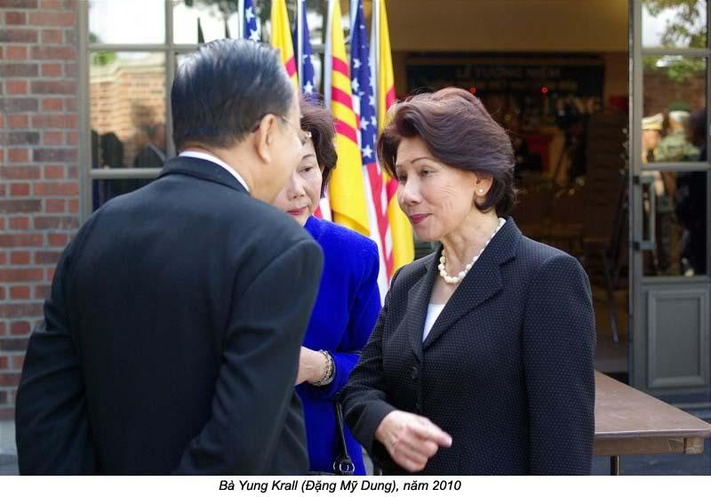

Chương 4

ng ngoại tôi thường nói với con cháu là gia đình mình là gia đình nông dân, nhưng tôi chưa bao giờ thấy ông coi sóc vườn như bà ngoại và dì Bảy. Mỗi ngày ông bách bộ ra vườn quít, rồi đi thăm mả cậu Út Thế. Trên đường dẫn ra ruộng t cây cầu bắc ngang qua một con lạch. Cầu đã nhỏ lại yếu, khi có người bước lên, nó run rẩy như muốn sụm xuống. Ông ngoại già rồi, đi đứng cũng yếu, nên không dám leo lên cầu, sợ té xuống lạch. Vì lý do đó, miếng vườn bí mật của dì Bảy, lọt theo ruộng lúa, không bao giờ bị ông khám phá ra.
Miếng vườn này dì trồng đậu ve, đậu bắp, cà tím, cả chua, ớt hiềm, ớt sừng trâu. Miếng vườn được giữ bí mật, vì lãi tức của nó để mua thuốc men cho những cán bộ Việt Cộng. Nếu ông biết được chuyện này thì sẽ “chết cả đám”. Để giữ hoàn toàn bí mật, dì Bảy không mướn người ngoài gia đình, chỉ có đám cháu của dì thi đua với nhau phụ giúp đi hái rau, bẻ trái, làm cỏ, vun xới cho miếng vườn được tốt tươi thôi.
Thật ra, trong thâm tâm, tôi không mê cái việc cứu một tên cán bộ Việt Cộng. Tôi ra vườn tiếp dì một tay vì thấy dì qua vất vả. Nhưng tôi cũng hiểu rằng giúp dì chăm lo miếng vườn bí mật là tôi gián tiếp giúp đỡ Việt Cộng nằm vùng. Vì vậy, mỗi khi có tin Việt Cộng giết người, tôi lại thấy mình tội lỗi đầy đầu.
Một lần, tôi thắc mắc hỏi dì Bảy tại sao những cán bộ hay đắp mô, phá đường, phá câu, làm cản trở lưu thông, thậm chí có khi giết cả đàn bà con nít, mà chưa bao giờ dám đụng đến các xe nhà binh của phe quốc gia, hoặc xe mấy ông lớn? Không phải tôi thách thức Việt Cộng làm chuyện đó, nhưng tôi có quyền chất vấn hanh động của họ, vì tôi là con của ba tôi. Dì chỉ đáp buông xuôi rằng: “Cháu con nhỏ, làm sao hiểu được chiến tranh du kích”. Trong lòng, tôi không phục mà không dám nói ra.

Lâu sau, má tôi cũng bị “người ta” yêu cầu ủng hộ phong trào, mà không dám vô nhà gặp thẳng má tôi, vì họ sợ đụng độ với ông ngoại, nên đã nhờ dì Bảy làm trung gian. Hồi đó, tôi không hiểu má bị ép buộc hay tự nguyện đóng góp. Rồi má ra chợ Cần Thơ mua vải về may mấy chục bộ bà ba đen.
Mỗi ngày sau giờ ngủ trưa, ông ngoại tôi thường qua nhà ngồi uống trà, trò chuyện với má tôi. Bà vừa may vừa tiếp chuyện cha. Thế rồi một chuyện bất ngờ xảy đến. Buổi trưa hôm đó, má tôi đang may đồ ba ba đen cho Việt Cộng thì ông ngoại bất chợy đi vô. Ông biết ngay là má tôi đang làm việc gì. Ông liền bước trở ra ngoài rồi réo lớn:
“Nhãn qua đây cho tao hỏi. Bay toa rập cái gì nữa đây?”.
Tội nghiệp, dì tôi không đi mà chạy qua gặp ông để bị rầy. Ông hỏi:
“Ai bắt em mày nối giáo cho giặc?”.
Má tôi tìm cách gỡ cho dì Bảy, nên thưa với ông:
“Cũng không tốn kém gì nhiều đâu, cậu. Chỉ tốn có một chút vải, một chút công của con thôi”.
Đây là lần đầu tiên má và dì Bảy bị rầy, mà ông quên không đuổi đám con nít chúng tôi đi chỗ khác chơi. Ông nổi giận, la lớn:
“Bay có biết là tui nó khủng bố em của bay không? Nó hy sinh tới mức này chưa đủ sao. Từ ngày lấy thằng Quang nó làm mọi cho thằng cộng sản, một mình lo nuôi dưỡng bảy đứa con thơ, thức khuya dậy sớm, ngồi máy còng lưng, bay con muốn nó làm cái gì nữa đây?”.
Dì Bảy nhìn xuống đất không dám trả lời ông, trong khi ông tiếp tục chửi lay qua cộng sản nằm vùng.
Mỗi lần ông ngoại chửi Việt Cộng, ông thường nhắc cho con cháu biết “nuôi Việt Cộng là nuôi ong tay áo, nuôi khỉ dòm nhà”. Ông nói bữa nay má tôi may áo che cho họ ấm lưng, dì Bảy cho họ ăn đẫy bụng, ngày mai nếu hai bà từ chối tiếp tế họ, hai bà sẽ bị ghép vô tội phản phúc. Ông chửi “cách mạng”; ông không tin có mặt nào muốn làm cách mạng thiệt tình. Họ là quân cướp có tổ chức. Ông hăm doạ hoài, ông nói Cộng sản ngoài Bắc sẽ vô đây cướp giựt, và vết tới cạn miền Nam, bắt dân miền Nam làm tôi mọi cho đảng cộng sản, ông ngoại biết dì Bảy và Hồng Nga, Hoàng Mai hoạt động mật với Việt Cộng, nên ông ra lịnh cấm bất cứ con cháu nào của ông bước ra khỏi miếng đất này với lý do không chính đáng.
Ông ngoại kêu Việt Cộng là đồ “khát máu”. Chị Yvonne lớn tuổi; 9 tuổi tôi mới vô lớp năm, còn chị đã học lớp nhì rồi, nên chị chơi chữ với tụi tôi. Chị đố tôi và chị Thuận có hiểu ý nghĩa của danh từ “khát máu” không? Tôi thì nói có nghĩa là muốn máu, muốn giết người để uống máu. Chị Thuậti thì nói “khát máu” là không cùng một dân tộc, không cùng một giống nòi. Chị Yvonne ngoe ngoải đi, rồi nói: “Hai đứa bay đúng mà sai”. Tôi ghé tai nói nhỏ với chị Thuận: “Lớn đầu mà ăn hiếp con nít”.
Ông ngoại rầy la thì cu rầy la, dì Bảy hội họp với cán bộ nằm vùng thì cứ hội họp, nhưng kín đáo hơn, để ông ngoại không hay biết gì hết. Dì cũng không ngưng việc ủng hộ và đóng góp cho Việt Cộng.
Có lần, một ông công an nói với ông ngoại tôi:
- Ghé thử coi có gặp con rể của ông ãa về chơi không?
Ông ngoại tôi liền trả miếng:
- Tôi trọng thưởng mấy chú, nếu mấy chú bắt được con rể đem nó về đây cho vợ con nó. Làm ơn đừng có tới lui đây hoài, gây rắc rối gia đình tôi lắm.
Hộ không bao giờ được mời vô nhà nghỉ chân, hay được uống một ly nước mưa, nhưng họ vẫn tới, vẫn rình rập.
Đúng như má tôi đã nói, hoàn cảnh của chúng tôi rất tế nhị, đứng giữa hai làn ranh, bị cả hai bên nghi ngờ, làm khó làm dễ. Rồi cái ngày tai hoạ giáng xuống gia đình tôi đã tới. Một hôm, má tôi đi Cần Thơ với chị Thảo. Đến chiều, chỉ có một mình chị về với bộ mặt tái mét, hớt hơ hớt hải báo tin má đã bị công an bắt giam để điều tra. Ông ngoại liền phản ứng một cách mau lẹ. Ông thuê ngay một chuyến xe đò, một mình ra Cần Thơ tìm cách cứu má tôi. Đám con nít chúng tôi sợ quá. Tôi khóc thét lên, Hải Vân lầm lì im lặng như một người câm. Tôi hôm đó, chị em tôi không dám ngủ nhà, phải chạy qua ngủ nhà bà ngoại. Bà ngoại đốt nhang cầu xin Phật Bà Quan Âm.
Lúc rời nhà, ông ngoại quả quyết là sáng hôm sau nếu đường xá an ninh, ông sẽ đem má tôi về. Dù vậy, chúng tôi vẫn mong má về sớm hơn, nên mỗi khi nghe có tiếng động bên ngoài, chúng tôi chạy ra cửa với hy vọng thấy má về. Tối đó, tất cả lũ con ông cậu, hai dì, cùng con cháu của các ông bà ngồi đầy nhà bà ngoại chờ tin má.
Về sự ra đi của ba tôi, má dặn đi dặn lại là nếu có ai hỏi thìi trả lời “Ba mất tích”. Chúng tôi chỉ biết vâng lời, nhưng thật ra, không có ai thèm hỏi đám con nít chúng tôi. Bấy giờ nghe tin má bị công an bắt, Hải Vân chỉ sợ người ta giết mất má, nên sụt sịt khóc mà nói:
“Sao má không nói cho họ biết là ba đi ra Hà Nội rồi. Mà người ta đánh chết mà thì làm sao?”.
Chị Yến bồng Hải Vân lên, vỗ về:
“Cưng à, người ta không có đánh má đâu. Má không có tội tình gì hết. Người ta chỉ muốn hỏi má một vài điều rồi cho má về. Đừng có lo gì hết”.
Đúng như lời quả quyết trước khi ra Cần Thơ, sáng hôm sau, ông ngoại dẫn má tôi về bình yên. Ông nắm tay má tôi dẫn đi như dẫn một đứa con nít. Mặt má tôi buồn xỉu, như một con chim sẻ bị thương. Tôi thầm tự nhủ tôi sẽ phải giúp đỡ má nhiều hơn, phải giấu cái buồn, phải đừng cho má biết tôi nhớ ba và anh Khôi, và tôi cũng mong bà ngoại và mọi người an ủi má tôi bằng những lời êm dịu, ngọt ngào. Chúng tôi chợt để ý đến vẻ lo âu hiện trên gương mặt ông ngoại, tôi đoán ngay rằng phải có chuyện không êm, ông ngoại mới lo như vậy.
Má tôi được Công an cho ra về thong thả, vì ông ngoại tôi gặp thẳng ông trưởng ty Công an và cho biết ông từng là Xã trường của Bang Thạch trong nhiều năm, có uy tín trong dân chúng. Ông xin bảo lãnh cho má tôi, ông cũng quả quyết rằng tất cả gia đình tôi không ai biết ba tôi và các cậu đi đâu và hiên ở đâu. Ông còn nói thêm rằng chúng tôi không về phe cộng sản để phá hoại nền trị an của miền Nam. Nghe ông trình bày như vậy ông trưởng ty công an bằng lòng cho má tôi được tự do.
Khi má tôi ra khỏi nhà giam, ông đưa má tôi tới nhà cậu mợ Hai Định ở gần trường canh nông để tạm nghỉ qua đêm. Ông cũng cho biết là ông không thể cản trở công an rình mò, theo dõi để kiếm cho ra ba tôi và các cậu, ông cũng không có quyền hạn gì cấm đoán họ tiếp tục làm khó dễ má tôi, hay lại bắt má tôi nữa. Ông kết luận là má tôi phải tìm cách thoát ra khỏi cảnh “chạy ông mà mắc ông mả”, một bên là phe quốc gia miền Nam, một bên là các cán bộ cộng sản nằm vùng, vừa đe doạ vừa ép buộc má tôi phải theo họ.